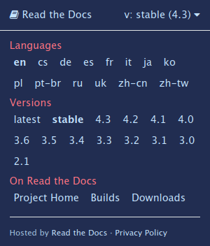

在地化與國際化
In this article, we explain high-level approaches to internationalizing and localizing your documentation.
By default, Read the Docs assumes that your documentation is or might become multilingual one day.
The initial default language is English and
therefore you often see the initial build of your documentation published at /en/latest/,
where the /en denotes that it's in English.
By having the en URL component present from the beginning,
you are ready for the eventuality that you would want a second language.
Read the Docs supports hosting your documentation in multiple languages. Read below for the various approaches that we support.
單語言的專案
If your documentation isn't in English (the default), you should indicate which language you have written it in.
It is easy to set the Language of your project. On the project Admin page (or Import page), simply select your desired Language from the dropdown. This will tell Read the Docs that your project is in the language. The language will be represented in the URL for your project.
For example,
a project that is in Spanish will have a default URL of /es/latest/ instead of /en/latest/.
Projects with multiple translations
也參考
- How to manage translations for Sphinx projects
Describes the whole process for a Sphinx documentation projects with multiples languages in the same repository and how to keep the translations updated on time.
Each language must have its own project on Read the Docs. You will choose one to be the parent project, and add each of the other projects as "Translations" of the parent project.
讓我們以 godot 作為範例。
The godot project is the parent.
Each translation then has its own project, for example godot-es.
The Language for godot-es is set to Spanish.
Then, on the Translations page of the godot project, godot-es is set as translation.
This has the results of serving:
godot位於https://docs.godotengine.org/en/stable/godot-es位於https://docs.godotengine.org/es/stable/
It also gets included in the Read the Docs flyout menu:
備註
The default language of a custom domain is determined by the language of the parent project that the domain was configured on. See 自訂域名 for more information.
翻譯工作流
When you work with translations, the workflow of your translators becomes a critical component.
Considerations include:
Are your translators able to use a Git workflow? For instance, are they able to translate directly via GitHub?
您是否收益於機器翻譯？
Do you need different roles, for instance do you need translators and editors?
What is your source language?
When are your translated versions published?
There are many translation platforms that support this workflow. These include:
Because Read the Docs builds your Git repository, you can use any of the above solutions. Any solution that synchronizes your translations with your Git repository will ensure that your translations are automatically published with Read the Docs.